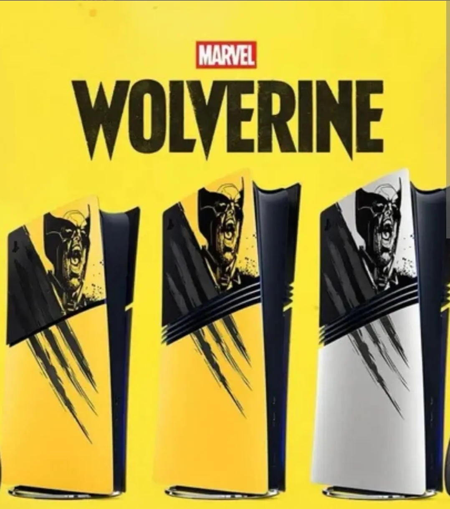

Sony anuncia PS5 especial de Marvel's Wolverine

A Sony revelou uma nova edição limitada do PlayStation 5 inspirada em Marvel's Wolverine. O console possui um visual baseado no personagem e no clássico uniforme amarelo do Wolverine.
Além do console, a edição especial também acompanha um controle DualSense com visual temático. A Sony também anunciou acessórios inspirados no personagem.
Pré-vendas: 19 de agosto de 2026
Lançamento: 15 de setembro de 2026
Preço do bundle: US$ 649,99
O pacote especial inclui o PlayStation 5 Digital Edition com visual inspirado no Wolverine e um controle DualSense temático. A edição será produzida em quantidade limitada.
O jogo Marvel's Wolverine será lançado em 15 de setembro de 2026. A edição especial do console chega justamente no período de lançamento do jogo.
Ainda não há informações oficiais sobre o preço e a disponibilidade dessa edição especial no Brasil.
← Voltar para o início